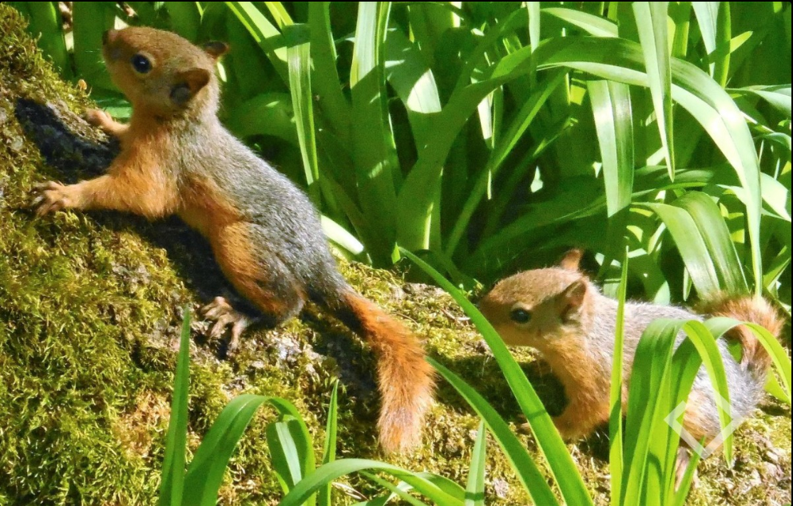

ამ რბილი და ფაფუკი არსებისთვის კუდი ფრიად მნიშვნელოვანი ნაწილია. ის მხოლოდ მზისა და სიცივისგან კი არ იცავს თავის პატრონს, ხიდან ჩამოვარდნისას პარაშუტის ფუნქციასაც ასრულებს. მაგრამ თუ დაუსველდა ეს ფუმფულა ნაწილი, მაშინ იგი შესაძლოა ღუზასავით ჩაეშვას წყალში.  ციყვების წინა ოთხი კბილი არასდროს წყვეტს ზრდას, ვინაიდან დიდი ჯაფა ადგება საკვების ღრღნის დროს და მუდმივად ცვდება. იკვებება როგორც მცენარეულობით, ასევე უხერხემლო ცხოველებით. ზამთრის სარჩოს აგროვებს და ფუღუროში აწყობს.